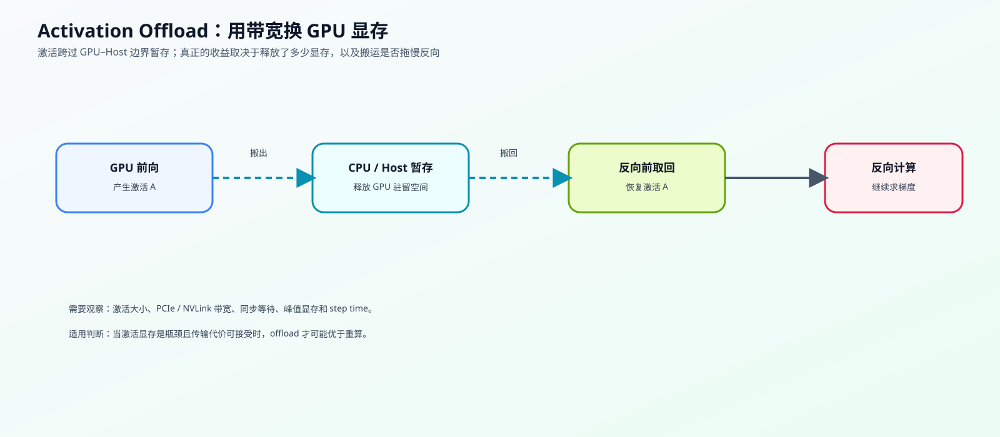
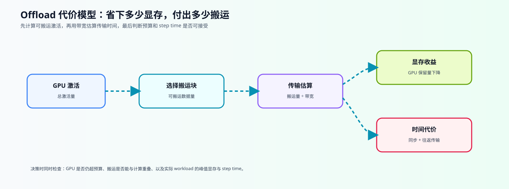

新版 Notebook 任务
打开本课 Notebook 官方版本
42. Activation Offload | 激活卸载
难度： Hard | 环境： CPU-first
标签： 显存优化, 激活值, Offload | 目标人群： 显存优化学习者
本节导读
当 activation 占用超过 GPU 预算时，除了 checkpointing，还可以把部分激活搬到 CPU 或 host memory，并在反向传播需要时取回。本节用预算模型计算保留量、搬运量和理论传输时间，先把搬运路线的成本结构拆开。
这是一节机制原理节：它和 19 是兄弟关系。19 主讲 checkpointing 的重算路线；42 主讲 offload 的搬运路线。两者都在回答“怎么把训练显存压下来”，但实现机制不同，代价模型也不同。
在显存路线里，offload 是否值得采用取决于 GPU 预算、可搬运对象、host / PCIe / NVLink 带宽和额外传输时间。若传输代价过高，应同时比较 checkpointing、batch 调整和 mixed precision 等方案。
完成本节后，你应该能够解释激活为什么需要在不同存储层级之间移动，判断搬运收益是否可能被带宽与同步成本抵消，并知道哪些结论需要放回固定 workload 做真实验证。
关键词： offload, transfer, bandwidth
当前题目检查清单
- TODO 1: 汇总 offload 结果和显存/带宽指标
- TODO 2: 计算往返搬运时间
- TODO 3: 补全策略判断逻辑
- TODO 4: 完成 offload 与 checkpointing 的性价比比较
展开官方原理、图解与任务要求
前置阅读
导语： 进入本节前，先能区分 checkpointing 的重算路径和反向传播需要的激活状态，再观察 offload 如何用设备间搬运换取 GPU 空间。
Step 1: 核心思想与痛点
Activation Offload 处理的是“需要保留、但暂时不用”的 activation：前向后把它从 GPU 搬到 CPU 或 host memory，反向需要时再搬回。它释放的是 GPU 驻留空间，新增的是设备间传输和同步成本。先沿着前向结束、反向取回和策略组合三个阶段阅读表格，再看主图中的驻留路径。
| 训练阶段 |
Offload 的动作 |
需要关注的成本 |
与 checkpoint 的区别 |
| 前向结束后 |
把暂时不用的 activation 搬出 GPU |
搬出时间、主机内存和同步 |
checkpoint 选择少保存 |
| 反向开始前 |
按需把 activation 搬回 GPU |
搬回时间、带宽和等待 |
checkpoint 重新执行前向 |
| 策略组合 |
与重算策略共同作用 |
搬运与重算代价可能叠加 |
需要固定 workload 验证 |
| 判断结果 |
显存是否回到预算内 |
释放空间是否值得新增代价 |
同时观察 peak memory、step time 和吞吐 |

Step 2: 代价模型与边界
设一组激活块的总大小为 A，GPU 可用预算为 B，带宽为 bw。本步先把容量、搬运量和时间放进同一张账；这些数值用于解释机制，不代表真实 PCIe / NVLink 测量。

- 如果总激活量不超过 GPU 预算，理论上不需要 offload；如果超过预算，优先评估距离下一次使用较远且允许搬运的激活块。
- 单程理论时间等于搬运数据量除以假设带宽；真实反向通常还要考虑搬回 GPU 的往返流量。
- offload 不是越多越好：如果留在 GPU 的状态仍超过预算，方案不可行；如果搬运和同步时间过长，显存收益可能不值得。
Step 3: 驻留选择与预算决策
offload 的决策可以拆成四个机制问题：哪些激活暂时不会被使用、哪些对象允许离开 GPU、搬出后 GPU 是否回到预算内、搬运时间是否值得这次显存收益。表格把这些问题映射到可观察量和判断结果；“距下一次使用的层数”只是教学模型中的冷热近似，不等同于真实运行时调度指标。
| 决策环节 |
需要回答的问题 |
本题中的观察量 |
读数如何解释 |
| 选择对象 |
哪些激活距离下一次使用较远，且允许搬运？ |
激活冷热程度、是否允许搬运 |
越冷越适合优先评估，但不等于真实调度顺序 |
| 计算容量 |
搬出后 GPU 是否回到预算内？ |
保留量、超预算量 |
仍然超预算表示当前计划不可行 |
| 计算搬运 |
为释放空间需要搬多少数据、多久？ |
搬运量、理论传输时间 |
理论时间还未包含完整往返和重叠 |
| 输出策略 |
收益和代价是否达到教学阈值？ |
可行性、节省比例、策略判断 |
这是预算模拟决策，不是 GPU 实测结论 |
Step 4: 动手实战（预算模拟）
完成下面四个函数。先说明边界：本题只验证“预算不足时搬哪些块、理论上搬多少数据、估算单程和往返传输时间”，不创建 CUDA tensor，也不执行真实 CPU↔GPU copy。先用下表把机制概念、代码输入输出和验证重点对齐，完成后仍必须在 76 的真实 GPU benchmark 中验证。
例如总激活为 736 MiB、GPU 预算为 384 MiB，需要搬出 352 MiB；若假设带宽为 8 GiB/s，单程理论时间约为 352 / 8 × 1000 = 44 ms。真实训练还要考虑搬回 GPU 的另一程，以及 pinned memory、异步拷贝和重叠；这些因素不写入本题的纸面估算。
| 实现对象 |
作用与关键输入 |
输出或关键字段 |
验证重点 |
ActivationChunkSpec |
描述激活块的大小、预计复用距离和是否允许搬运；bytes_ 单位为 byte，reuse_delay_layers 单位为 layer |
激活块描述 |
非负大小、非负复用距离、名称可区分 |
summarize_activation_offload |
按预算选择需要搬出的激活块；gpu_budget_bytes 为 byte，带宽按 GiB/s 解释 |
保留量、搬运量、单程理论时间、预算可行性 |
overflow_bytes、pressure_ratio、saved_ratio 和名称列表 |
estimate_round_trip_transfer_ms |
根据搬运量和假设带宽估算搬出与搬回的理论时间 |
往返时间，单位 ms |
往返系数、零字节和非法带宽 |
recommend_offload_policy |
根据节省比例和理论时间阈值给出教学用策略判断 |
accept / tune / reject |
先检查可行性，再检查收益与时间阈值 |
compare_offload_vs_checkpointing |
用理论节省字节数除以理论额外时间比较两条路线 |
两个 score 与 preferred |
零时间、非负输入；结果不替代真实 benchmark |
提示
reuse_delay_layers 是教学模型中的“距离下一次使用的层数”，不是硬件指标；数值越大，表示这块激活越冷。- offload 先搬运冷块，但真实系统还要考虑反向访问顺序、pinned memory、异步拷贝、往返搬运、重叠和同步，这些不在本题模拟范围内。
bandwidth_gbps 是理论有效带宽假设，代码按 GiB/s 解释；它不是 nvidia-smi 能直接给出的实测传输带宽。这里保留旧字段名以兼容示例，实际含义更接近 bandwidth_gib_per_s。- 比较 offload 和 checkpointing 时，可以先看“单位时间省了多少显存”，但只有在预算可行、质量和吞吐都满足要求时才有工程意义。
测试
运行下面的测试，检查你的 offload 计划、策略判断和路线比较是否正确。
题目与测试代码 · Cell 9
@dataclass
class ActivationChunkSpec:
"""描述一个用于预算模拟的激活块。
这里只记录选择依据和理论大小，不代表真实 CUDA tensor，也不包含 pinned memory、
异步拷贝或实际生命周期。"""
name: str # 激活块名称，便于解释最终搬出/保留了谁
bytes_: int # 激活块大小，单位 byte
reuse_delay_layers: int # 距离下一次使用的预计层数，越大越冷
offloadable: bool = True # 是否允许本策略搬出
@dataclass
class ActivationOffloadSummary:
"""记录一次 offload 预算计划的容量、传输和可行性结果。
`transfer_ms` 是单程理论时间；真实训练还要测量搬回、同步和重叠。
`feasible` 只表示当前不可搬运状态没有超过 GPU 激活预算。"""
total_bytes: int
gpu_budget_bytes: int
kept_bytes: int
offloaded_bytes: int
transfer_ms: float
pressure_ratio: float
saved_ratio: float
offloaded_names: list
kept_names: list
feasible: bool
overflow_bytes: int
def summarize_activation_offload(chunks, gpu_budget_bytes, bandwidth_gbps=12.0):
"""汇总一次 activation offload 预算计划，不执行真实 tensor 搬运。
Args:
chunks: ActivationChunkSpec 或等价 dict 的序列。
gpu_budget_bytes: 允许保留在 GPU 的 activation 预算，单位 byte。
bandwidth_gbps: 理论有效带宽，代码按 GiB/s 解释。
Returns:
ActivationOffloadSummary；feasible 表示不可搬运对象也没有超预算。
"""
if gpu_budget_bytes <= 0:
raise ValueError("gpu_budget_bytes must be positive")
if bandwidth_gbps <= 0:
raise ValueError("bandwidth_gbps must be positive")
normalized = []
for c in chunks:
if isinstance(c, ActivationChunkSpec):
normalized.append(c)
elif isinstance(c, dict):
normalized.append(ActivationChunkSpec(**c))
else:
raise TypeError("chunks must contain ActivationChunkSpec or dict")
names = [c.name for c in normalized]
if len(names) != len(set(names)):
raise ValueError("chunk names must be unique")
if any(c.bytes_ < 0 for c in normalized):
raise ValueError("chunk bytes must be non-negative")
if any(c.reuse_delay_layers < 0 for c in normalized):
raise ValueError("reuse_delay_layers must be non-negative")
total_bytes = sum(c.bytes_ for c in normalized)
kept_bytes = total_bytes
offloaded_names = []
candidates = sorted(
[c for c in normalized if c.offloadable],
key=lambda c: (-c.reuse_delay_layers, -c.bytes_, c.name),
)
for chunk in candidates:
if kept_bytes <= gpu_budget_bytes:
break
kept_bytes -= chunk.bytes_
offloaded_names.append(chunk.name)
kept_names = [c.name for c in normalized if c.name not in offloaded_names]
# ==========================================
# TODO 1: 汇总 offload 结果和显存/带宽指标
# 提示：保持上面的选择结果不变，先算 offloaded_bytes = total_bytes - kept_bytes；
# 再按 GiB/s 转成字节/秒，估算单程 transfer_ms，并补出 pressure_ratio / saved_ratio。
# overflow_bytes > 0 时 feasible 必须为 False；total_bytes 为 0 时比例取 0。
# ==========================================
overflow_bytes = max(kept_bytes - gpu_budget_bytes, 0)
feasible = overflow_bytes == 0
# offloaded_bytes = ???
# transfer_ms = ???
# pressure_ratio = ???
# saved_ratio = ???
return ActivationOffloadSummary(
total_bytes=total_bytes,
gpu_budget_bytes=gpu_budget_bytes,
kept_bytes=kept_bytes,
offloaded_bytes=offloaded_bytes,
transfer_ms=round(transfer_ms, 2),
pressure_ratio=round(pressure_ratio, 3),
saved_ratio=round(saved_ratio, 3),
offloaded_names=offloaded_names,
kept_names=kept_names,
feasible=feasible,
overflow_bytes=overflow_bytes,
)
def estimate_round_trip_transfer_ms(offloaded_bytes: int, bandwidth_gbps: float):
"""估算 activation 搬出 GPU 再搬回的理论时间，不执行真实 copy。
Args:
offloaded_bytes: 单次搬运的数据量，单位 byte。
bandwidth_gbps: 假设有效带宽，代码按 GiB/s 解释。
Returns:
搬出加搬回的理论时间，单位 ms；不包含同步和重叠效果。"""
if offloaded_bytes < 0:
raise ValueError("offloaded_bytes must be non-negative")
if bandwidth_gbps <= 0:
raise ValueError("bandwidth_gbps must be positive")
# ==========================================
# TODO 2: 计算往返搬运时间
# 提示：单程是 bytes / (bandwidth_gbps * 2**30)，
# 往返需要乘以 2，并换算为毫秒；输入为 0 时返回 0.0。
# return_ms = ???
# ==========================================
pass
def recommend_offload_policy(summary: ActivationOffloadSummary, min_saved_ratio=0.25, max_transfer_ms=60.0):
"""根据教学阈值返回策略建议。
Args:
summary: summarize_activation_offload 返回的预算摘要。
min_saved_ratio: 教学用最低显存节省比例。
max_transfer_ms: 教学用单程理论传输时间上限。
Returns:
'accept'、'tune' 或 'reject'；不代表真实工程决策。
"""
if summary.offloaded_bytes <= 0:
return "reject"
if min_saved_ratio < 0 or max_transfer_ms < 0:
raise ValueError("policy thresholds must be non-negative")
if not summary.feasible:
return "reject"
# ==========================================
# TODO 3: 补全策略判断逻辑
# 提示：先拒绝不可行方案，再检查 saved_ratio 和 transfer_ms；
# 收益达到阈值且传输可接受时 accept，达到放宽后的教学阈值时 tune，
# 其余情况 reject。不要把这个教学决策写成真实 GPU 结论。
# ==========================================
# if ???:
# return "accept"
# if ???:
# return "tune"
return "reject"
def compare_offload_vs_checkpointing(offload_summary: ActivationOffloadSummary, checkpoint_saved_bytes, checkpoint_extra_ms):
"""用理论节省字节数除以理论额外代价做教学比较。
Args:
offload_summary: offload 预算摘要。
checkpoint_saved_bytes: checkpoint 理论节省字节数。
checkpoint_extra_ms: checkpoint 理论额外时间，单位 ms。
Returns:
包含两种 score 和 preferred 的字典；不替代真实 benchmark。
"""
if checkpoint_saved_bytes < 0 or checkpoint_extra_ms < 0:
raise ValueError("checkpoint values must be non-negative")
# ==========================================
# TODO 4: 完成 offload 与 checkpointing 的性价比比较
# 提示：只比较“理论节省字节数 / 理论额外时间”；
# offload 使用 offloaded_bytes / transfer_ms，checkpoint 使用
# checkpoint_saved_bytes / checkpoint_extra_ms。使用 max(..., 1e-6)
# 处理零时间，返回 score 更大的 preferred。
# ==========================================
# offload_score = ???
# checkpoint_score = ???
# preferred = ???
return {
"offload_score": round(offload_score, 3),
"checkpoint_score": round(checkpoint_score, 3),
"preferred": preferred,
}
题目与测试代码 · Cell 11
def test_activation_offload():
try:
chunks = [
ActivationChunkSpec("embed", 256 * 1024 * 1024, 0),
ActivationChunkSpec("mid_a", 192 * 1024 * 1024, 2),
ActivationChunkSpec("mid_b", 160 * 1024 * 1024, 3),
ActivationChunkSpec("tail", 128 * 1024 * 1024, 1),
]
summary = summarize_activation_offload(chunks, gpu_budget_bytes=384 * 1024 * 1024, bandwidth_gbps=8.0)
assert summary.total_bytes == 736 * 1024 * 1024
assert summary.offloaded_bytes == 352 * 1024 * 1024
assert summary.kept_bytes == 384 * 1024 * 1024
assert summary.offloaded_names == ["mid_b", "mid_a"]
assert summary.kept_names == ["embed", "tail"]
assert 42.0 < summary.transfer_ms < 44.0
assert 0.47 < summary.saved_ratio < 0.49
assert estimate_round_trip_transfer_ms(summary.offloaded_bytes, 8.0) == 85.94
assert recommend_offload_policy(summary) == "accept"
tuned = summarize_activation_offload(chunks, gpu_budget_bytes=384 * 1024 * 1024, bandwidth_gbps=4.0)
assert recommend_offload_policy(tuned) == "tune"
rejected = summarize_activation_offload(chunks, gpu_budget_bytes=384 * 1024 * 1024, bandwidth_gbps=1.0)
assert recommend_offload_policy(rejected) == "reject"
empty = summarize_activation_offload(chunks, gpu_budget_bytes=1024 * 1024 * 1024, bandwidth_gbps=8.0)
assert empty.offloaded_bytes == 0
assert empty.feasible is True
assert empty.overflow_bytes == 0
assert recommend_offload_policy(empty) == "reject"
blocked = summarize_activation_offload(
[ActivationChunkSpec("fixed", 512 * 1024 * 1024, 0, offloadable=False)],
gpu_budget_bytes=256 * 1024 * 1024,
bandwidth_gbps=8.0,
)
assert blocked.feasible is False
assert blocked.overflow_bytes == 256 * 1024 * 1024
assert recommend_offload_policy(blocked) == "reject"
invalid_specs = [
[ActivationChunkSpec("bad", -1, 0)],
[ActivationChunkSpec("bad", 1, -1)],
[ActivationChunkSpec("dup", 1, 0), ActivationChunkSpec("dup", 1, 1)],
]
for invalid in invalid_specs:
try:
summarize_activation_offload(invalid, gpu_budget_bytes=1, bandwidth_gbps=1.0)
except ValueError:
pass
else:
raise AssertionError("invalid activation metadata should be rejected")
better_offload = compare_offload_vs_checkpointing(summary, checkpoint_saved_bytes=300 * 1024 * 1024, checkpoint_extra_ms=80.0)
assert better_offload["preferred"] == "offload"
better_ckpt = compare_offload_vs_checkpointing(summary, checkpoint_saved_bytes=500 * 1024 * 1024, checkpoint_extra_ms=20.0)
assert better_ckpt["preferred"] == "checkpointing"
for kwargs in [
{"min_saved_ratio": -0.1},
{"max_transfer_ms": -1.0},
]:
try:
recommend_offload_policy(summary, **kwargs)
except ValueError:
pass
else:
raise AssertionError("negative policy thresholds should be rejected")
for args in [
(summary, -1, 10.0),
(summary, 100, -1.0),
]:
try:
compare_offload_vs_checkpointing(*args)
except ValueError:
pass
else:
raise AssertionError("negative checkpoint values should be rejected")
print("✅ 预算模拟验证通过：offload 计划、可行性和教学策略判断符合预期。")
print("证据边界：这是理论预算模拟，不是实际 CPU↔GPU 搬运或真实 step time 测量。")
except NotImplementedError:
print("请先完成 TODO 部分的代码！")
raise
except Exception as e:
print(f"❌ 测试失败: {e}")
raise
test_activation_offload()
本区由当前 Notebook 题目区生成。下面的精讲用于概念练习；回到 Notebook 时以本区的函数签名、TODO 和测试为准。参考答案及可选实验请在 Notebook 中查看。